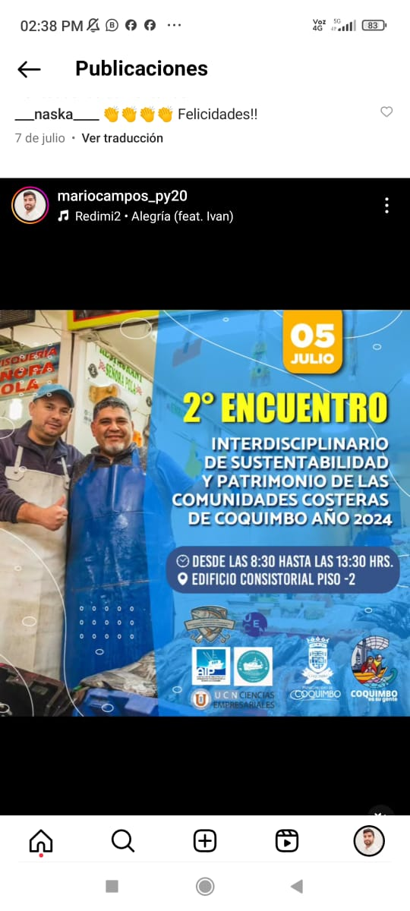

Manuscrito pedagógico · Terminado en 2024 · 241 páginas
Guía pedagógica de ciencias sociales
La Guía pedagógica de ciencias sociales: comprensión social y reflexión crítica reúne materiales desarrollados durante mi docencia entre 2020 y 2023 en las carreras de Sociología y Educación Diferencial.
El proyecto comenzó como una serie de apuntes que me permitían conectar la bibliografía obligatoria con la estructura de cada asignatura. Con el tiempo, esos textos incorporaron ejemplos, actividades, evaluaciones y recursos de profundización. En 2024 terminé de reorganizarlos como un manuscrito unitario destinado principalmente a docentes.
Proceso
De los apuntes a una guía
Cuando comencé a impartir clases necesitaba construir recorridos que articularan textos procedentes de distintas tradiciones. Los apuntes surgieron como una herramienta para organizar esa bibliografía y ofrecer una secuencia común desde la cual desarrollar las clases.
Al compartirlos con estudiantes y utilizarlos en nuevas asignaturas, los materiales comenzaron a transformarse. Añadí ejemplos próximos a sus experiencias y actividades que permitieran observar, discutir y aplicar los conceptos.
La escritura del manuscrito no consistió simplemente en reunir esos documentos. Fue necesario revisar repeticiones, completar contenidos, establecer una progresión y convertir materiales diseñados para situaciones específicas en recursos que pudieran ser reutilizados por otras personas.
Organización
Una estructura progresiva
La guía está organizada en cuatro partes y ocho capítulos:
Fundamentos de las ciencias sociales, con una introducción al conocimiento científico y su producción.
Psicología social, con contenidos sobre interacción, influencia y perspectivas contemporáneas.
Intersecciones entre las ciencias sociales, centrada en sus relaciones con la educación y la economía.
Debates contemporáneos en sociología, dedicada a problemas teóricos de mayor complejidad.
Cada capítulo incluye objetivos de aprendizaje, una introducción, desarrollo conceptual, recursos de profundización, actividades, notas y referencias. El manuscrito incorpora además un glosario que puede utilizarse para repasar contenidos o preparar nuevos materiales pedagógicos.
Índice y organización general del manuscrito.Ejemplo de actividad pedagógica.Glosario concebido también como recurso independiente.
Reformulación
Reconocer un cambio de público
El proyecto fue concebido inicialmente como un libro introductorio para estudiantes. Durante la escritura advertí que la extensión y densidad alcanzadas no siempre correspondían con la lectura sencilla que había imaginado.
En lugar de ocultar esa dificultad, reformulé el manuscrito como una guía para docentes. Las actividades, preguntas y recursos podían funcionar como un repertorio desde el cual seleccionar y adaptar materiales para diferentes cursos.
Este desplazamiento modificó el sentido del proyecto. La guía ya no busca ofrecer una única introducción autosuficiente a las ciencias sociales, sino poner a disposición una arquitectura de contenidos y actividades surgida de una práctica docente concreta.
Autoría
Mi contribución
Escribí y organicé la totalidad del manuscrito. El trabajo comprendió la transformación de apuntes y evaluaciones en capítulos, la selección y articulación de contenidos, la elaboración de ejemplos y actividades, la incorporación de recursos de profundización y la construcción del glosario.
El texto se desarrolló al alero de CIPSE-UCEN durante el período en que me desempeñaba en el centro. Marco Cofré escribió el prólogo y Fernando Varela colaboró en la preparación del manuscrito.
Estado editorial y acceso
Manuscrito completo
El manuscrito fue terminado en 2024 y se encuentra bajo contrato con la Editorial de la Universidad Central de Chile. El proceso editorial continúa pendiente.
La guía no pretende representar de manera exhaustiva las ciencias sociales. Su selección responde a las asignaturas que impartí, a los programas de estudio con los que trabajé y a los problemas pedagógicos que encontré durante ese período.
Guía teórico-práctica · Probada con estudiantes durante 2025 · 95 páginas
Orientaciones básicas para la formulación de proyectos de investigación
Este texto fue escrito para acompañar a estudiantes de ciencias sociales que comienzan a formular un proyecto de investigación. Su propósito es hacer visible la lógica que conecta la elección de un tema, la exploración inicial, la construcción de una problemática, las decisiones metodológicas y el resguardo ético.
La guía parte de una convicción sencilla: a investigar se aprende investigando, pero la experiencia necesita mediación, oportunidades de revisión y espacios para conversar sobre las decisiones adoptadas.
Secuencia
Construir un proyecto capítulo a capítulo
El texto está organizado en seis capítulos:
lógica de la investigación social;
elección y delimitación de un tema;
fase de exploración;
formulación de la problemática;
operacionalización y planificación del trabajo;
aspectos éticos de la investigación.
Cada capítulo combina explicaciones, ejemplos y actividades destinadas a avanzar en la construcción de un proyecto propio. La fase exploratoria incorpora revisión bibliográfica, observación, revisión documental y entrevistas iniciales, de manera que la curiosidad pueda convertirse gradualmente en una pregunta investigable.
El texto incluye además un anexo introductorio sobre revisiones sistemáticas y scoping reviews.
Recorrido general de la guía.La exploración como transición desde la curiosidad hacia una pregunta.La ética integrada al diseño del proyecto.
Aplicación
Probar la guía acompañando tesis
Durante 2025 utilicé un borrador con diez estudiantes de cuarto año de Psicología a quienes acompañaba en la formulación de sus proyectos de tesis.
Trabajamos clase a clase leyendo los capítulos y desarrollando las actividades. Durante las sesiones les preguntaba qué contenidos les habían resultado claros o difíciles, qué actividades les habían servido y qué aspectos necesitaban una explicación diferente. Al finalizar el curso conversamos sobre la contribución que el texto había realizado a sus procesos de tesis.
Una tensión pedagógica
Entre una secuencia lineal y una práctica iterativa
La organización por capítulos ofrece una imagen relativamente ordenada del proceso de investigación. Esa linealidad cumple una función pedagógica, pero no pretende describir literalmente cómo se investiga.
En la práctica, formular un proyecto implica regresar a decisiones anteriores, reformular preguntas, descartar alternativas y reconocer problemas que no eran visibles al comienzo. La guía ofrece una ruta inicial para orientarse dentro de ese proceso, no una receta que elimine su incertidumbre.
Autoría
Mi contribución
Escribí la totalidad del texto y diseñé sus actividades. También lo utilicé como soporte del acompañamiento de tesis, medié la lectura de sus capítulos y recogí retroalimentación durante su aplicación en aula.
El manuscrito fue desarrollado al alero de CIPSE-UCEN y contó con el apoyo del director de la carrera de Psicología, David Covarrubias.
Alcance y acceso
Un punto de entrada
El texto está orientado principalmente a proyectos cualitativos de complejidad inicial o intermedia. No reemplaza manuales metodológicos especializados ni pretende cubrir todos los diseños posibles.
Su función es ofrecer un punto de entrada y una estructura de trabajo para quienes necesitan comenzar a convertir un interés general en un proyecto argumentado, realizable y éticamente responsable.
Construir una cadena de valor mediante investigación aplicada
Durante 2024, en la asignatura Sociología Económica, propuse a los estudiantes desarrollar un diagnóstico y formular recomendaciones para una organización utilizando los conocimientos trabajados en el curso.
Franco González y Matías Toledo desarrollaron el proyecto con mayor profundidad. Su trabajo se concentró en la cadena de valor de la pesca de camarones y langostinos de la Asociación de Industriales y Armadores Pesqueros de Coquimbo (AIP).
Vinculación
Vincular el aula con una organización
Gestioné el contacto inicial con la persona encargada de la Unidad de Fomento Productivo de la Municipalidad de Coquimbo. A través de ese vínculo, los estudiantes pudieron acceder a la AIP y desarrollar el trabajo con una organización real.
Propuse utilizar el enfoque de cadenas de valor como marco para delimitar el problema, identificar actores y observar las relaciones entre los distintos eslabones de la actividad productiva.
El encargo dejó así de ser solamente un ejercicio de aplicación conceptual. Los estudiantes tuvieron que relacionarse con interlocutores externos, producir información y construir una representación que pudiera resultar comprensible para otras personas.
En terreno
Aprender trabajo de campo
Acompañé a los estudiantes durante una jornada de trabajo de campo. La instancia permitió enseñar en situación cómo tomar notas, formular preguntas, escuchar a los entrevistados y registrar información relevante sin perder de vista los objetivos del proyecto.
El proceso combinó revisión de literatura y fuentes secundarias, elaboración de pautas de entrevista, gestión de consentimientos informados y realización de entrevistas.
Después trabajamos conjuntamente en el análisis de los datos. Los estudiantes delimitaron los eslabones de la cadena, identificaron actores y organizaciones de apoyo, seleccionaron problemas y elaboraron un análisis FODA.
Secuencia de recolección de información presentada por los estudiantes.
Representación
Construir el diagrama mediante iteraciones
La visualización final no apareció de una vez. Los estudiantes preparaban una versión del diagrama y la revisábamos en reuniones de trabajo. Yo señalaba problemas de organización, legibilidad o interpretación; ellos incorporaban las correcciones y presentaban una nueva versión.
Estas iteraciones se intercalaban con el análisis de los datos. Modificar la figura podía hacer visible una relación que necesitaba mayor elaboración y una nueva interpretación podía exigir reorganizar el diagrama.
Diagrama final elaborado por Franco González y Matías Toledo.
Circulación pública
Llevar el trabajo fuera del aula
La persona encargada de Fomento Productivo conoció el resultado y nos invitó a presentarlo en el 2.º Encuentro Interdisciplinario de Sustentabilidad y Patrimonio de las Comunidades Costeras de Coquimbo, realizado el 5 de julio de 2024.
Para esa instancia preparé una introducción sobre la nueva economía y cadenas productivas solidarias. Su función era ofrecer un marco conceptual antes de la presentación del diagnóstico elaborado por los estudiantes.
La exposición pública permitió que un trabajo iniciado como actividad de curso circulara ante una audiencia distinta y se relacionara con conversaciones territoriales sobre sustentabilidad, producción y comunidades costeras.

Afiche difundido públicamente para el encuentro.Introducción conceptual preparada para la presentación pública.
Autoría y créditos
Un trabajo acompañado
La investigación, el análisis y el diagrama final fueron realizados por Franco González González y Matías Toledo Torres.
Mi contribución consistió en diseñar el encargo pedagógico, gestionar el vínculo inicial, proponer el enfoque de cadenas de valor, acompañar el trabajo de campo, apoyar el análisis de los datos y orientar las iteraciones de la figura. También preparé la introducción conceptual utilizada durante la presentación pública.
Documento
Presentación pública
La copia pública reúne la introducción conceptual y la presentación del trabajo de los estudiantes. Se omitió la diapositiva final que contenía direcciones de correo electrónico.